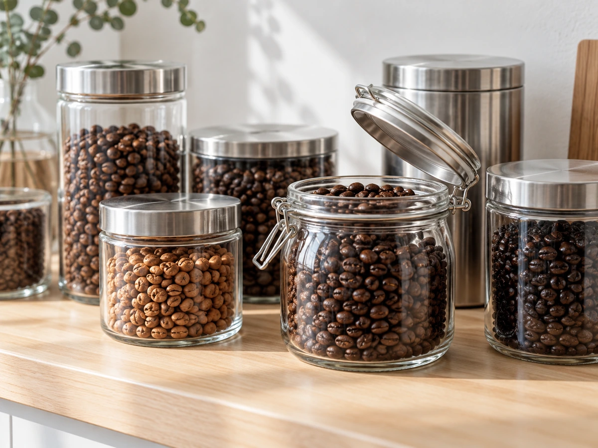

CONCEPT
好きなコーヒーを、
秋田で仕事に
コーヒースタンドHaLoは、秋田市保戸野、千秋モールの1階にあるお店です。 店主は東京で長く会社員として働いたあと、2021年に秋田へ戻り、2022年3月にこのお店を開きました。 好きなコーヒーを仕事にして、自家焙煎の豆を届けています。
Coffee Stand, not a Cafe
お店のInstagramには「自家焙煎のコーヒー豆とドリンクがメイン。カフェではありません」とあります。主役は、あくまで豆です。
豆の仕入れ値が上がるなかでも、お客さんのことを考えて豆を選んでいます。10月のInstagramには、こう書かれていました。
ある程度抑えられた価格で美味しい豆を仕入れましたので、またどうぞよろしくお願いします 公式Instagram（2026年10月8日）より
毎日飲む豆だからこそ、まじめに選んで焼いているお店です。
